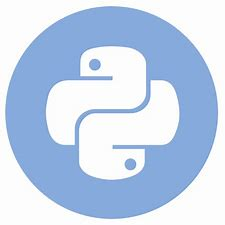

Python developer looking for the first professional experience.
Skills in python, django framework, mySQL databases, HTML5 and CSS3
which i used in personal projects with learning purposes respectively a website with
CRUD applied,complete user dashboard and a registration system linked to a MySQL database.
I consider myself someone who can learn new technologies easily and adapt to whatever it takes with
optimism and effort.

I worked 3 years in a restaurant and for almost a year in a gym, in these jobs I learned
about work discipline and professionalism. At the beginning of 2022 I decided that I wanted to be
a developer and so I started my journey of studies and experiences with development, I started by
learning python, P00, MySQL database and then learn Django, HTML5 and CSS3. My
objectives are to improve even more and master my skills so as learning new languages and
development tools.